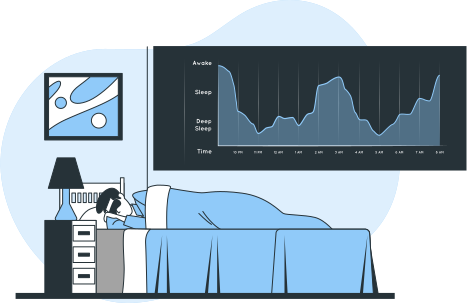
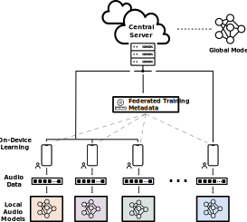

Aaqib Saeed
Assistant Professor, Eindhoven University of Technology
Deep Learning, Sensing, and Decentralized AI
|
|
Federated Fine-Tuning of Foundation Models via Probabilistic Masking
Vasileios Tsouvalas, Yuki M Asano, Aaqib Saeed Short Paper @ Foundation Models in the Wild - Workshop at ICML'24 Foundation Models (FMs) have revolutionized machine learning with their adaptability and high performance across tasks; yet, their integration into Federated Learning (FL) is challenging due to substantial communication overhead from their extensive parameterization. We present DeltaMask, a novel method that efficiently fine-tunes FMs in a FL setting at an ultra-low bitrate, well below 1 bpp. Our comprehensive evaluations across various datasets and architectures demonstrate DeltaMask efficiently achieves bitrates as low as 0.09 bpp, enhancing communication efficiency while maintaining FMs performance. |
|
|
Communication-Efficient Federated Learning through Adaptive Weight Clustering and Server-Side Distillation
Vasileios Tsouvalas, Aaqib Saeed, Tanir Ozcelebi, Nirvana Meratnia @ IEEE ICASSP 2024 We introduce FedCompress, an approach that reduces communication costs in Federated Learning (FL) by combining weight clustering with server-side knowledge distillation, without altering the aggregation algorithm. It dynamically adjusts clusters based on a novel representation quality score and achieves a 4.5-fold reduction in communication costs and a 1.13-fold speedup in inference on diverse datasets. |
 |
Federated Learning with Noisy Labels
Vasileios Tsouvalas, Aaqib Saeed, Tanir Ozcelebi, Nirvana Meratnia @ ACM Transactions on Intelligent Systems and Technology Short Paper @ Interpolation and Beyond - Workshop at NeurIPS Federated learning (FL) approaches assume high-quality labels are readily available on users' devices; in reality, label noise can naturally occur in the FL setting and follows a non-i.i.d. distribution among clients. Here, we propose FedLN, a framework to deal with label noise across different FL training stages: FL initialization, on-device model training, and server-side model aggregation. Extensive experiments on various publicly available vision and audio datasets demonstrate a 24% improvement on average compared to other existing methods for a label noise level of 70%. We further validate the efficacy of FedLN in human-annotated real-world noisy datasets and report a 9% increase on average in models' recognition performance. |
 |
On Out-of-Distribution Detection for Audio with Deep Nearest Neighbors
Zaharah Bukhsh, Aaqib Saeed @ ICASSP 2023 Out-of-distribution (OOD) detection is concerned with identifying data points that do not belong to the same distribution as the model's training data. For the safe deployment of predictive models in a real-world environment, it is critical to avoid making confident predictions on OOD inputs as it can lead to potentially dangerous consequences. However, OOD detection remains largely an under-explored area in the audio (and speech) domain. This is despite the fact that audio is a central modality for many tasks, such as speaker diarization, spoken language identification, and sound event detection. To address this, we propose to leverage feature-space of the model with deep k-nearest neighbors to detect OOD samples. |
 |
Distilled Non-Semantic Speech Embeddings with Binary Neural Networks
Harlin Lee, Aaqib Saeed @ Pattern Recognition Letters We introduce BRILLsson, an approach for learning representations with binary neural networks for a broad range of non-semantic speech tasks. We leverage knowledge distillation for training binary models using a large and real-valued TRILLsson model with only a fraction of the dataset used to train the teacher model. Our models are only 2MB in size with a latency less than 8ms, making them suitable for deployment in low-resource devices, such as wearables. We evaluate BRILLsson models on eight benchmark tasks (including but not limited to spoken language identification, emotion recognition, health condition diagnosis, and keyword spotting), and demonstrate that our proposed approach results in ultra-light and low-latency models that perform as well as large-scale models. |
 |
The Augmented Image Prior: Distilling 1000 Classes by Extrapolating from a Single Image
Yuki M. Asano*, Aaqib Saeed* @ ICLR 2023 We developed a framework for training neural networks from scratch using a single image by means of knowledge distillation from a supervised pretrained teacher. We demonstrate that it is possible to extrapolate to semantic classes such as those of ImageNet using single datum as models' inputs. We leverage knowledge distillation for this and achieve performances of 74% on CIFAR-100, 69% on ImageNet, 75.2% on UCF-101, 51% on Kinetics-400 and by extending this method to audio, 84% on SpeechCommands. |
|
|
Active Learning of Non-semantic Speech Tasks with Pretrained Models
Harlin Lee, Aaqib Saeed, Andrea L. Bertozzi @ ICASSP 2023 Pretraining neural networks with massive unlabeled datasets has become popular as it equips the deep models with a better prior to solve downstream tasks. However, this approach generally assumes that for downstream tasks, we have access to annotated data of sufficient size. In this work, we propose ALOE, a novel system for improving the data- and label-efficiency of non-semantic speech tasks with active learning. ALOE uses pre-trained models in conjunction with active learning to label data incrementally and learns classifiers for downstream tasks, thereby mitigating the need to acquire labeled data beforehand. |
|

|
Automatic Sleep Scoring from Large-scale Multi-channel Pediatric EEG
Harlin Lee, Aaqib Saeed @ Learning from Time Series for Health - Workshop at NeurIPS 2022 Sleep is essential to the health of infants, children, and adolescents, and sleep scoring is the initiative to accurately diagnose and treat potentially life-threatening conditions. Here, we present the first automated sleep scoring results on a recent large-scale pediatric sleep study dataset collected during standard clinical care. We develop a transformer-based model that learns to classify five sleep stages from millions of multi-channel electroencephalogram (EEG) sleep epochs. Further, we conduct an in-depth analysis of the model performance based on patient demographics and EEG channels. Data illustrations by Storyset |
|
|
Binary Early-Exit Network for Adaptive Inference on Low-Resource Devices
Aaqib Saeed @ Interspeech 2022 Deep neural networks have become larger over the years with the increasing demand for computational resources for inference. Binary neural networks (BNNs) tackle the issue to an extent with extreme compression and speed-up gains compared to real-valued models. We propose a simple but effective method to accelerate inference through unifying BNNs with an early-exiting strategy. Our approach allows simple instances to exit early based on a decision threshold and utilizes output layers added to different intermediate layers to avoid executing the entire binary neural model. We extensively evaluate our method on three audio classification tasks and across four BNNs architectures to demonstrate favorable quality-efficiency trade-offs while being controllable with an entropy-based threshold specified by the system user. |
 |
COCOA: Cross Modality Contrastive Learning for Sensor Data
Shohreh Deldari, Hao Xue, Aaqib Saeed, Daniel V. Smith, Flora D. Salim @ ACM IMWUT 2022 - Ubicomp 2022 We propose COCOA (Cross mOdality COntrastive leArning), a self-supervised model that employs a novel objective function to learn high-quality representations from multisensor data by computing the cross-correlation between different data modalities and minimizing the similarity between irrelevant instances. We evaluate the effectiveness of COCOA across a range of datasets and against several self-supervised methods. COCOA is highly label-efficient than the other baselines including the fully supervised model while using only one-tenth of available labeled data. |
|
|
Beyond Just Vision: A Review on Self-Supervised Representation Learning on
Multimodal and Temporal Data
Shohreh Deldari, Hao Xue, Aaqib Saeed, Jiayuan He, Daniel V. Smith, Flora D. Salim Self-supervised methods aim to improve data efficiency of deep neural networks through discriminative pre-training of models using supervisory signals that can be obtained from the raw data itself without any human intervention. We provide a comprehensive review of multimodal self-supervised learning methods for temporal data. To this end, we 1) provide a comprehensive categorization of existing SSRL methods, 2) introduce a generic pipeline by defining the key components of a SSRL framework, 3) compare existing models in terms of their objective function, network architecture and potential applications, and 4) review existing multimodal techniques in each category and various modalities, while also highlighting weaknesses and future opportunities. We believe our work develops a perspective on the requirements of SSRL in domains that utilize multimodal and/or temporal data. |
|

|
Federated Self-Training for Semi-Supervised Audio Recognition
Vasileios Tsouvalas, Aaqib Saeed, Tanir Ozcelebi @ ACM TECS 2022 Short Paper@ IEEE ICASSP 2022 Federated Learning is a distributed machine learning paradigm dealing with decentralized and personal datasets. Since data reside on devices like smartphones and virtual assistants, labeling is entrusted to clients or labels are extracted in an automated way for learning models. However, in the case of audio data, acquiring semantic annotations can be prohibitively expensive and time-consuming. As a result, an abundance of audio samples remains unlabeled and unexploited. We propose FedSTAR, a semi-supervised learning approach for audio recognition. FedSTAR leverages unlabeled data via self-training to improve the generalization of audio models. We show that with as little as 3% labeled data available, FedSTAR on average can improve the recognition rate by 13.28% compared to the fully supervised federated model. We further demonstrate that self-supervised pre-trained models can accelerate the training of on-device models, significantly improving convergence within fewer training rounds. |
|
|
Recognizing Head Gestures and Facial Expressions with Earbuds
Shkurta Gashi, Aaqib Saeed, Alessandra Vicini, Elena Di Lascio, Silvia Santini @ ACM ICMI 2021 Head gestures and facial expressions -- like, e.g., nodding or smiling -- are important indicators of the quality of human interactions in physical meetings as well as in a computer-mediated environment. The automated systems able to recognize such behavioral cues can support and improve human interactions. In this work, we consider inertial signals collected from unobtrusive, ear-mounted devices to recognize gestures and facial expressions typically performed during social interactions -- head shaking, nodding, smiling, talking, and yawning. We propose a hierarchical classification approach with transfer learning to improve the generalization and data efficiency of the predictive model using raw IMU data. |
|
|
LumNet: Learning to Estimate Vertical Visual Field Luminance for Adaptive Lighting Control
Prince Songwa, Aaqib Saeed, Sachin Bhardwaj, Thijs Kruisselbrink, Tanir Ozcelebi @ ACM IMWUT 2021 - Ubicomp 2021 We propose a novel approach to estimate desktop luminance using deep learning for adaptive lighting control. Our proposed LumNet model learns visual representations from ceiling-based images, which are collected in indoor spaces within the physical vicinity of the user to predict average desktop luminance as experienced in a real-life setting. We also present a self-supervised contrastive method for pre-training LumNet with unlabeled data and we demonstrate that the learned features are transferable onto a small labeled dataset which minimizes the requirement of costly data annotations. |
|
|
Learning Sensory Representations with Minimal Supervision (PhD Thesis)
Aaqib Saeed - PhD Thesis (2021) - Eindoven University of Technology We develop novel techniques that lie on the intersection of deep learning, ambient sensing, and ubiquitous computing to address issues pertaining to learning from unlabeled sensory data and making models robust to various input artifacts. The research focuses on representation learning with deep neural networks to realize the vision of self-learning for embedded intelligence in everyday devices, such as smartphones, wearables, earables, and more. Our proposed methods are primarily based on the theme of self-supervised learning to extract generic representations from multi-modal sensory inputs, such as electroencephalogram, audio, accelerometer, and more. Our work enables deep neural networks to learn broadly useful representations that perform well on a spectrum of downstream tasks, are robust to noise and other artifacts, and generalize when transferred to other domains. |

|
Contrastive Learning of General-Purpose Audio Representations
Aaqib Saeed, David Grangier, Neil Zeghidour @ IEEE ICASSP 2021 We introduce COLA, a self-supervised pre-training approach for learning a general-purpose representation of audio. We build on top of recent advances in contrastive learning for computer vision and reinforcement learning to design a lightweight, easy-to-implement self-supervised model of audio. We pre-train embeddings on the large-scale Audioset database and transfer these representations to 9 diverse classification tasks, including speech, music, animal sounds, and acoustic scenes. We show that despite its simplicity, our method significantly outperforms previous self-supervised systems. |

|
Learning from Heterogeneous EEG Signals with Differentiable Channel Reordering
Aaqib Saeed, David Grangier, Olivier Pietquin, Neil Zeghidour @ IEEE ICASSP 2021 We propose CHARM, a method for training a single neural network across inconsistent input channels. Our work is motivated by Electroencephalography (EEG), where data collection protocols from different headsets result in varying channel ordering and number, which limits the feasibility of transferring trained systems across datasets. CHARM is differentiable and compatible with architectures (e.g. CNNs) that expect consistent channels. Across different input noising conditions we show its robustness. We also successfully perform transfer learning between datasets collected with different EEG headsets. |

|
Sense and Learn: Self-Supervision for Omnipresent Sensors
Aaqib Saeed, Victor Ungureanu, Beat Gfeller @ Machine Learning with Applications Looking for a way to utilize large-scale unlabeled sensory (time-series) data to improve generalization on downstream task with few-labeled datapoints? Try: Sense and Learn, a self-supervised learning framework. We propose a suite of self-supervised pretext tasks for pre-training deep neural networks without semantic labels. We evaluate the quality of learned embedding with our framework on a wide variety of end-tasks with a linear classifier on top of a fixed encoder, effectiveness in the low-data regime, and transfer learning. Our approach opens up exciting possibilities for on-device continual learning without requiring supervision. |

|
Federated Self-Supervised Learning of Multi-Sensor Representations for Embedded Intelligence
Aaqib Saeed, Flora D. Salim, Tanir Ozcelebi, Johan Lukkien @ IEEE Internet of Things Journal 2020 We present a self-supervised method for learning multi-sensor representations in a federated learning setting from unlabeled and decentralized data. Our scalogram-signal correspondence learning (SSCL) technique utilize wavelet transform and a contrastive objective for training the deep network to determine if a given pair of a signal and its complementary view (i.e., a scalogram generated with wavelet transform) align with each other or not. We extensively assess the quality of learned features with SSCL on diverse public datasets, which comprise signals like electroencephalography, blood volume pulse, accelerometer, and Wi-Fi channel state information. We conduct experiments to demonstrate our approach's effectiveness in both centralized and federated settings through linear classification. Mainly, SSCL significantly improves generalization in the low-data regime by reducing the volume of labeled data required through leveraging self-supervised learning. |
|
Multi-Task Self-Supervised Learning for Human Activity Detection
Aaqib Saeed, Tanir Ozcelebi, Johan Lukkien @ IMWUT June 2019- Ubicomp 2019 Workshop Paper@ Self-supervised Learning Workshop ICML 2019 We've created a Transformation Prediction Network, a self-supervised neural network for representation learning from sensory data that does not require access to any form of semantic labels, e.g., activity classes in human context detection. We demonstrate that simple auxiliary tasks of recognizing signal transformations result in strong supervision for extracting high-level features that generalize well on the down-stream task; substantially improving performance under semi-supervised and transfer learning settings in the low-data regime. |
|
|
Synthesizing and Reconstructing Missing Sensory Modalities in Behavioral Context Recognition
Aaqib Saeed, Tanir Ozcelebi, Johan Lukkien @ MDPI Sensors 2018 We propose a method based on an adversarial autoencoder for handling missing sensory features and synthesizing realistic samples. We empirically demonstrate the capability of our approach in comparison with classical techniques for filling-in missing values on a large-scale activity recognition dataset collected in-the-wild. |
|

|
Model Adaptation and Personalization for Physiological Stress Detection
Aaqib Saeed, Tanir Ozcelebi, Johan Lukkien, Jan van Erp and Stojan Trajanovski @ IEEE DSAA 2018 Long-Term exposure to stressful situations can have negative health consequences, such as the increased risk of cardiovascular diseases and immune system disorder. We utilize a deep reconstruction classification network and multitask learning for domain adaption and personalization of stress recognition models. The proposed methods performed significantly better than baselines on multimodal physiological (time-series) data collected during driving tasks, in both real-world and driving simulator. |

|
Personalized Driver Stress Detection with Multi-Task Neural Networks using Physiological Signals
Aaqib Saeed and Stojan Trajanovski @ ML4H Workshop NeurIPS 2017 Stress can be seen as a physiological response to everyday emotional, mental, and physical challenges. We suggest a subjects-as-tasks approach for multi-task learning based neural network (with hard parameter sharing of mutual representation and task-specific layers) for personalized stress detection using skin conductance and heart rate from wearable devices. |
|
Deep Physiological Arousal Detection in a Driving Simulator using Wearable Sensors
Aaqib Saeed, Stojan Trajanovski, Maurice van Keulen and Jan van Erp @ DMBIH Workshop IEEE ICDM 2017 Driving is an activity that requires considerable alertness. Insufficient attention, imperfect perception, inadequate information processing, and sub-optimal arousal are possible causes of poor human performance. Understanding of these causes and the implementation of effective remedies is of crucial importance to increase traffic safety and improve driver's well-being. For this purpose, we develop an arousal detection algorithm using a temporal convolutional neural network. The model is trained on raw physiological signals, i.e., heart rate, skin conductance, and skin temperature. |
|
|
#WhoAmI in 160 Characters? Classifying Social Identities Based on Twitter
Anna Priante, Djoerd Hiemstra, Tijs van den Broek, Aaqib Saeed, Michel Ehrenhard and Ariana Need @ NLP and CSS Workshop EMNLP 2016 We combine social theory and NLP methods to classify English-speaking Twitter users' online social identity in profile descriptions. Our study shows how social theory can be used to guide NLP methods, and how such methods provide input to revisit traditional social theory that is strongly consolidated in offline settings. |